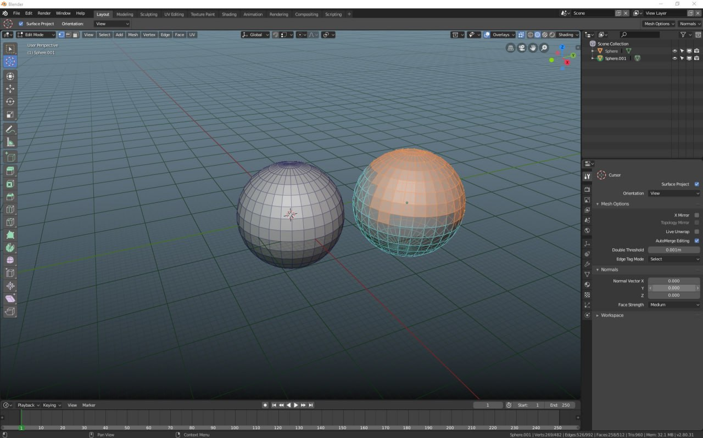
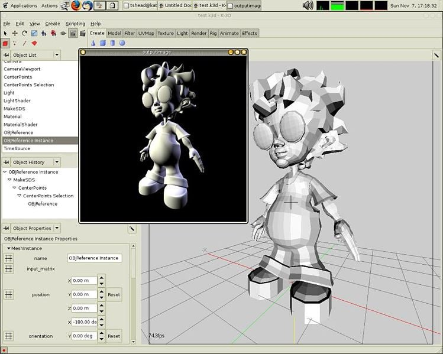
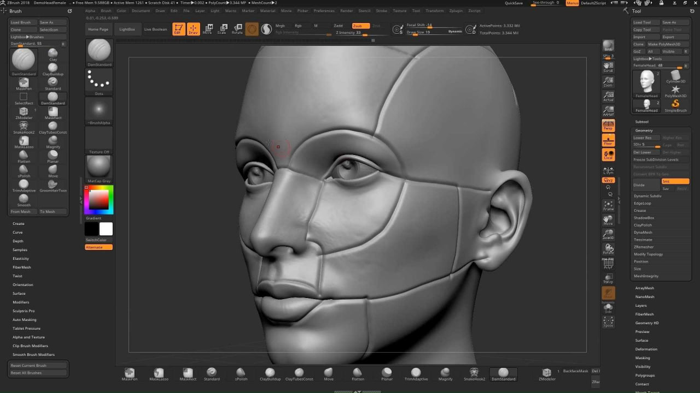
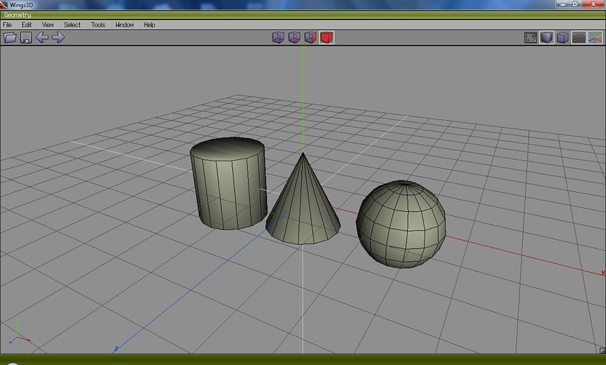
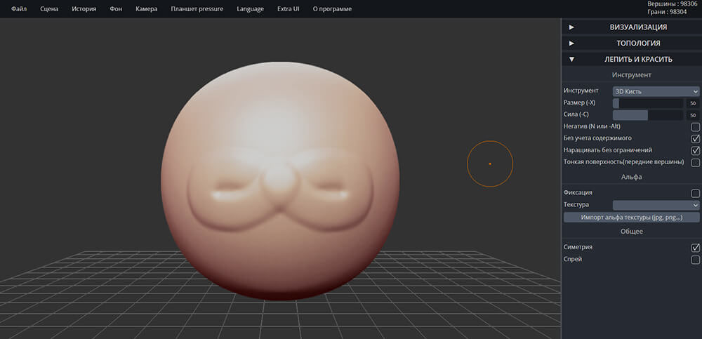
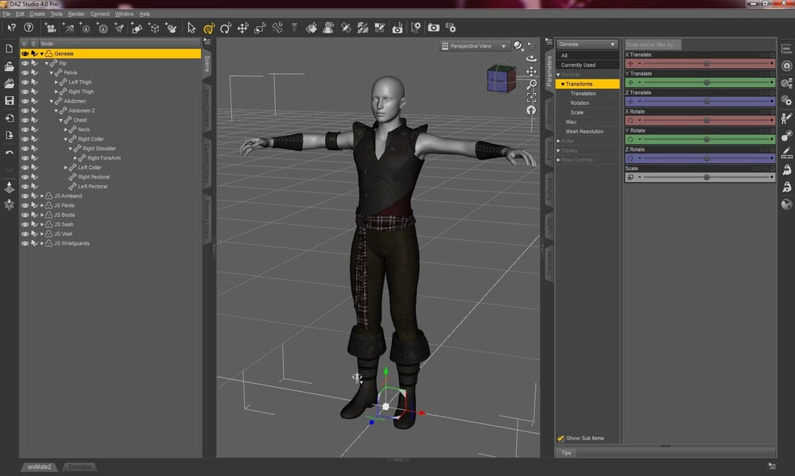

Cамо понятие 3D появилась только в 1960 году и представлялась собой сложные уравнения и вычисления.
Ещё тогда modeling было очень тяжело освоить и с ним тяжело было работать.
Сейчас же 3D используется везде: фильмах, играх, сериалах и мультфильмах
Для чего использовать: скульптинг и симуляция движений.
Уровень: профессионал.
Стоимость: бесплатно.
Blender — программа для скульптинга с открытым исходным кодом. Она помогает создавать трехмерную графику, добавлять визуальные пресеты и разрабатывать полнометражные анимационные фильмы. Вы можете добавлять встроенные фигуры, связывать объекты, подключать источники данных и рассчитывать пути движения. Также проектировщик предлагает инструменты для преобразования медиа: поворот, масштабирование и отображение. Вы можете удалять, объединять или дублировать объекты, применять множество эффектов: имитация меха, взрыва, дыма и жидкости.
Для чего использовать: создание анимированных 3D-моделей.
Уровень: любитель.
Стоимость: бесплатно.
K-3D понравится тем, кто работает в сфере строительства, дизайна, машиностроении, ювелирном деле. На выходе получаются реалистичные проекты, чтобы заказчик мог оценить, как будет выглядеть результат. Радует, что есть интерактивная система обучения. В коллекции программы представлено много шаблонов. При необходимости ее можно расширить путем установки дополнительных плагинов.
Для чего использовать: 3Д-скульптурирование объектов.
Уровень: профессионал.
Стоимость: от $39.95 в месяц, есть бесплатная пробная версия.
ZBrush — утилита для разработки виртуальной скульптуры и цифровой живописи для Windows. Применяется при производстве фильмов, VFX-проектов, видеоигр, иллюстраций, рекламных материалов, в автомобильной и промышленной сфере. Фигуры можно тянуть, сжимать, лепить, толкать и многое другое. В дополнение к скульптурированию, софт имеет функции для 2D-рисования. ZBrush доступен на 45-дневный пробный период. Затем вы можете приобрести бессрочную лицензию за 895 долларов или оплатить ежемесячную подписку стоимостью 39.95$.
Для чего использовать: трехмерное моделирование.
Уровень: любитель.
Стоимость: бесплатно.
Wings 3D — средство скульптурирования объектов. Предлагает стандартные инструменты для коррекции формы элемента, зеркального отражения всех изменений, лепки и т.д. Позволяет применять текстуры, указывать UV-координаты, настраивать материалы. Wings можно загрузить бесплатно. Редактор распространяется с открытым исходным кодом, который позволяет самостоятельно расширить функционал софта. Из недостатков можно отметить, что утилита не поддерживает анимированные мультимедиа.
Для чего использовать: скульптурирование фигур.
Уровень: любитель.
Стоимость: бесплатно.
SculptGL — онлайн-программа для 3D рисования, скульптинга фигур и оформления реалистичных объектов. Запускается во всех популярных браузерах и не требует установки. Вы сможете настроить фон, выбрать режим камеры, указать тип шейдера. Лепка выполняется простыми инструментами: кисть, закручивание, складка, масштабирование и т.д. Также можно рисовать поверх медиа любым цветом и применять маски.
Для чего использовать: моделирование героев.
Уровень: любитель.
Стоимость: бесплатно при регистрации.
Daz Studio предназначена для моделирования мультяшных персонажей, героев комиксов и иллюстраций. Имеется приличная коллекция шаблонов. В ней есть мифические существа, костюмы, дополнительный реквизит, предметы интерьера. Моделей можно рассмотреть с разных сторон, менять их положение как угодно. Отличается высоким качеством рендеринга.